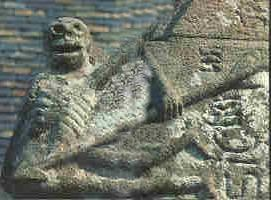
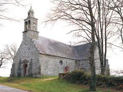
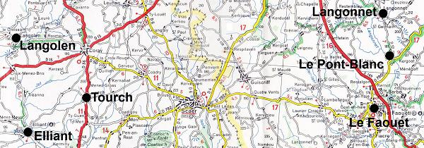
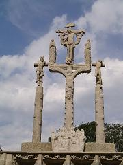
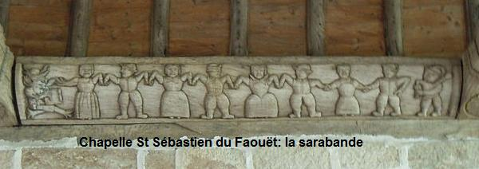
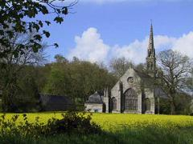
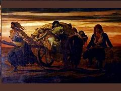
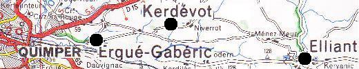

La Peste d'Elliant
The Plague of Elliant
Dialecte de Cornouaille
|
puis dans le Barzhaz, 1ère édition, en 1839. "C'est le premier chant qui ait été recueilli par ma mère" (Note page 55, édition 1867) Dans une lettre à l'historien D.L. Miorcec de Kerdanet, datée du 20 sept. 1835, La Villemarqué dit avoir entendu cette pièce dans sept endroits différents de Cornouaille. Dans l'article de l'"Echo", il affirme l'avoir entendue lors des funérailles d'un certain Lan Kentel, dans une ferme d'Elliant, en automne 1835, chantée par un jeune paysan blond, le "barde de Kerminihi". - Manuscrits: . Penguern, t. 112, 76, 77: "Ar vosenn wenn" (qui cite Elliant, origine inconnue) et la Peste de Guimiliau, t. 112, 78 - Recueils: . Luzel: "Gwerzioù", T.1 (1867): "Bosenn Elliant"; "Bosenn Plouescat" (communiqué par Miorcec de Kerdanet). - Périodiques: . Revue celtique (I, 1870, Le Men, "Bossenn Elliant", coll. à Briec); . Annales de Bretagne: Joseph Loth (II 1886, Abbé Le Goff, "Bosen Langonnet", coll. à Saint-Barthélémy); Le Goff dit connaître une version "Langolen"; . Mélusine (VIII, 1896, Ernault, "Son ar Vosen", coll. à Pédernec en 1896); . Paroisse Bretonne (sept. 1906, F. Cadic, "Bosenn Langonet"); . Tir nan Og (4, 1947), Huon, "Bosenn Merienn", coll à Plouisy en 1947. |
 |
Then in "Barzhaz Breizh, 1st edition, 1839. "It is the first song that was collected by my mother" (Note page 55, in 1867 edition). In his letter to the historian D.L. Miorcec de Kerdanet, dated 20th Sept. 1835, La Villemarqué claims to have heard this piece in seven different villages of Cornouaille. In his article in the "Echo", he writes that he heard it at the funeral of a named Lan Kentel, in a farm near Elliant, late in 1835, sung by a young fair-haired peasant known as the "Kerminihi Bard". In hand-written form: . Penguern, t. 112, 76, 78: "Ar vosenn wenn" (quoting Elliant, origin unknown) and the Plague of Guimiliau, t. 112, 78 In printed collections: . Luzel: "Gwerzioù", T.1 (1867): "Bosenn Elliant"; "Bosenn Plouescat" (contributed by Miorcec de Kerdanet). In periodicals:: . Revue celtique (I, 1870, Le Men, "Bossenn Elliant", coll. at Briec); . Annales de Bretagne: Joseph Loth (II 1886, Abbé Le Goff, "Bosen Langonnet", coll. at Saint-Barthélémy); Le Goff also knows a "Langolen" version; Mélusine (VIII, 1896, Ernault, "Son ar Vosen", coll. at Pédernec in 1896); . Paroisse Bretonne (sept. 1906, F. Cadic, "Bosenn Langonet"); . Tir nan Og (4, 1947), Huon, "Bosenn Merienn", coll at Plouisy in 1947. |
Ton
(Mode hypophrygien, semble-t-il, bien que noté en sol majeur dans le Barzhaz)
Rythme 4/4 et 2/4 toutes les 6 mesures
(Arrangt Chr.Souchon)
| Français | English |
|---|---|
|
1. On sait que vit à mi-chemin |
1. Between Langolen and Faouët |
Cliquer ici pour lire les textes bretons.
For Breton texts, click here.

|
Résumé Ce chant rapporte comment le Père Rassian, un ermite vivant "entre Le Faouët et Langolen (!)", invitait ses ouailles à instaurer une messe mensuelle pour éviter de subir le même sort qu'Elliant dont toute la population périt de la peste. Le premier chant publié par La Villemarqué La polémique qui opposa l'élève de l'Ecole des Chartres, La Villemarqué, à l'Inspecteur des Monuments historiques, Prosper Mérimée, à partir de septembre 1835, retarda la publication de la "Prophétie de Gwenc'hlan". Si bien que le premier chant publié par le jeune barde fut la présente ballade, la "Peste d'Elliant". Après avoir essuyé un refus du rédacteur en chef de la prestigieuse Revue des Deux-Mondes en février 1836, le jeune auteur dut se rabattre sur la revue légitimiste dont il était le collaborateur, l'Echo de la Jeune France pour publier, le 15 mars 1836, un article véhément intitulé "Un débris de Bardisme". On en trouvera un court extrait à la suite de la Prophétie de Gwenc'hlan. Le "débris" en question était la "Peste d'Elliant". Quand Elliant fut-il dévasté par la peste? Dans la lettre écrite le 20 septembre 1835 et qui fait suite à un entretien qu'il avait eu à Lesneven avec Miorcec de Kerdanet (cf. plus haut), La Villemarqué indique que frappé par la beauté de cette pièce, il avait tenté de la dater en se référant à la tradition. Le "Cartulaire" de Landévennec (conservé à la Bibliothèque de Quimper) contient effectivement un texte "La vie de Saint Guénolé de Cornouaille" (Vita Sancti Winwaloei Cornugallensis), qui date de 850 et qui y fut recopié au milieu du 11ème siècle. Dans la "note" qui suit le chant La Villemarqué indique précisément qu'il connaît le texte du Cartulaire par une citation de Dom Morice dans son "Histoire de Bretagne" (1746), ainsi que de Dom Lobineau (1666-1727) dans ses "Vies des Saints de Bretagne" (1725) que l'Abbé Tresvaux venait de republier. Francis Gourvil note que le cartulaire tel qu'il fut édité par La Borderie (p. 153) "n'assigne nullement Tourc'h comme résidence à ce personnage. Le Lan Ratian, aujourd'hui, Larrajen, auquel il a donné son nom se trouve en Corray, non en Tourc'h." Mais à vrai dire, cela ne change rien au raisonnement de La Villemarqué: les deux communes se touchent et Corray n'est qu'à quelques km au nord de Tourc'h. (Cet acte - sans doute factice - de donation de terres diverses par le roi Gralon à l'ermite Ratian qui avait eu recours à l'intersession de saint Guénolé pour conjurer une "cause de mortalité" justifiait que l'abbaye de Landévennec fondée par ledit Guénolé les ait récupérées à la mort de l'ermite qui les occupait.) La citation que l'on trouve dans le Barzhaz est (en gras, des mots omis):
Le chant du cahier de Keransquer S'il n'a pas "sollicité" le texte latin ci-dessus, comme certains l'en accusent, est-ce à dire que La Villemarqué n'a pas remanié le chant populaire qu'il a entendu? Certainement pas! La pièce lui fut, entre autres, chantée par la pauvre veuve "Marie-Jeanne de Melgven" (10 km au nord de Pont-Aven), comme cela est précisé par sa mère dans les deux "tables" et confirmé dans les "Notes" annexées au chant du Barzhaz à partir de l'édition de 1845. On trouve effectivement cette complainte dans le premier manuscrit de Keransquer sous le titre d'"Alias" qu'il faut certainement lire "Elian", localité connue aujourd'hui sous le nom d'Elliant" et située à une quarantaine de kilomètres à vol d'oiseau à l'ouest du Faouët (Cf. Texte breton et traduction ci-après). Les principaux éléments du chant du Barzhaz s'y retrouvent, mais avec des modifications, des omissions et des ajouts qui illustrent la méthode de restauration utilisée par le Barde de Nizon. En revanche, contrairement à ce qu'affirme Francis Gourvil dans son "La Villemarqué" (p. 420), Le nom du Saint, "Rassian", ne figure pas dans le manuscrit. Il sera ajouté en 1845 au poème du Barzhaz. Mais Gourvil se trompe lorsqu'il affirme que "parfaitement superflue, cette entrée en matière ne se retrouve dans aucune version" (p. 420). Dans un livret avec CD intitulé "Les sources du Barzaz-Breiz aujourdh'ui", paru en 1989, Donatien Laurent publie une version recueillie à Berné en 1965 auprès de Mme Maryvonne Bacon. Elle commence ainsi: "Tre er Pont Guen hag er Fawet (3 w.) / I hés ur zant en-eus kojet. / Ha on lares d'er Fawediz / Lakaat un ovren bep tri mis." "Entre le Pont-Blanc et le Faouët (ter)/ Il y avait un saint qui prêchait. / Et il disait aux Faouëtans / De faire dire une messe tous les trois mois" La peste de Plouescat Sur ce dernier point, La Villemarqué lui-même, dans une note supprimée en 1867, indiquait qu'il connaissait une complainte similaire, la "Peste de Plouescat", publiée par Miorcec de Kerdanet. Il a certainement trouvé dans d'autres versions circulant dans la région du Faouët, les éléments omis ou notés "etc." dans le manuscrit. La Peste de Plouescat recueillie à Plomeur, en pays bigouden, fut publiée également par Luzel dans le tome I de ses "Gwerzioù Breiz Izel", en 1867. Ce texte situe l'épidémie à Plouescat, sur la côte du Haut-Léon, commune dont "les registres des sépultures [révèlent qu'elle] fut cruellement éprouvée par le fléau en 1626 et 1627..." Suit une copie littérale de cette "Peste de Plouescat":
Comme l'écrit fort justement l'informateur de Luzel, M. Le Men, "La gwerz de "La Peste d'Elliant" me paraît être contemporaine de celle de "La Peste de Plouescat". C'est la même langue ["Plas marc'had" strophe 7, se trouve dans le manuscrit et dans l'édition de 1839. Il n'est remplacé par "Marc'hallec'h" qu'en 1845], la même inspiration. Je ne vois aucune raison qui puisse autoriser à lui assigner une date plus ancienne." Il ajoute que "ce chant est inconnu dans la paroisse d'Elliant [à une douzaine de km à l'est de Quimper], où la tradition d'une peste qui aurait ravagé la contrée est cependant bien vivante. En revanche, il est très répandu dans les Montagnes-Noires (Châteauneuf-du-Faou, Laz, Plonévez-du-Faou) et dans les montagnes d'Arrée (Berrien)" Rassian ou Pouliévin? Cependant, on cherche en vain dans l'original de Keransquer, du moins dans la transcription publiée dans les "Sources du Barzaz Breiz", le nom du saint, Rassian. M. Donatien Laurent lit ainsi la première strophe:
"Si [d'Arbois de Jubainville] était venu au Congrès celtique de Saint-Brieuc..., je lui aurais montré de vieilles copies que j'avais emportées de nos chants populaires; il y eût vu la justification de plusieurs modifications... J'avais apporté ici le cahier où se trouve cité le nom du saint que la première édition des chants bretons laissait anonyme." La Villemarqué fait ici allusion à un article paru en mai-juin 1867 dans la "Bibliothèque de l'Ecole des Chartes" où Jubainville dénonçait, à propos de la Peste d'Elliant, le procédé dont son confrère usait pour transformer une hypothèse en certitude. Par l'intermédiaire d'autres "Chartistes", Paul Raymond et Gustave Servois, La Villemarqué obtint de Jubainville la publication d'une rectification en septembre 1867: "Il avait avant lui... signalé à...ses lecteurs le vers dont il s'agit". C'est dire combien l'affaire lui tenait à coeur en ce début de "Querelle du Barzhaz" qui allait le confronter à bien d'autres accusations du même genre. De fait, dans l'édition de 1839 (et dans l'Echo de 1836), la première strophe n'a que deux vers:
Le lieu-dit "Le Pont-Blanc" cité dans le manuscrit original est situé sur la rivière Ellé, à 5 km environ du centre-ville du Faouët, commune à laquelle il est aujourd'hui rattaché.  A mi-chemin se trouve la très belle chapelle Saint-Sébastien, dont une inscription à l'extérieur du transept nord indique que la fondation fut commencée le 22 juillet 1598, à l'initiative d'un personnage appelé Pouliévin. Les mots qui suivent "P:IHOARNE:MCHR" (selon l'article publié par la Société polymathique du Morbihan pour les années 1860-1914, page 24) signifieraient, selon l'article Wikipédia qui y est consacré "gouverneur et recteur". Le même article précise que cette chapelle "a probablement été bâtie en tant qu'ex-voto pour la cessation de l'épidémie de peste de 1598, que relate le chanoine Jean Moreau dans ses "Mémoires des guerres de la Ligue en Bretagne"(Archives départementales (Rennes, Impr. bretonne), 1960)."Il est de fait que l'on peut admirer, parmi les motifs qui ornent les belles sablières sculptées en 1608 par G. Bernier (selon une inscription parfaitement lisible), une scène qui a bien sa place dans un tel contexte: une danse macabre composée de dix personnages, hommes et femmes, conduits par le diable au son du biniou. En outre, deux culs-de-lampes représentent deux personnages grotesques dans des attitudes très réalistes: l'un entrouvre son vêtement, l'autre se serre le ventre, tous deux comme malades et ayant envie de vomir. Le nom de POVLIEVIN qui figure encore sur une inscription portée par deux anges (à la suite de la banderole portant celui de Bernier), mais suivi, cette fois de la mention "P:R DE MEZ" désignerait-il le "Saint qui prêche" dont parle la gwerz authentique? N'inviterait-il pas les habitants du Faouët à dire la messe mensuelle dans cette chapelle votive? En outre, il existe une version de la "Peste d'Elliant" recueillie en 1966 à Gourin (à une quinzaine de km au nord du Faouët) par Donatien Laurent auprès de Louis Le Corre de Grondal, qui fait état d'un "Saint Bastian". Il s'agit certainement du Saint Sébastien de la chapelle du Pont-Blanc, plutôt que d'une déformation de "Saint Ratian", comme on serait tenté de le suggèrer. . Ce qui semble en tout cas évident, c'est que La Villemarqué a sciemment remplacé Le Pont-Blanc par Langolen, à une quarantaine de kilomètres à l'ouest du Faouët, dans la phrase "entre Le Port-Blanc et Le Faouët", pour pouvoir localiser à Tourc'h la prédication du saint homme. Il pouvait alors l'identifier avec le Rassian du Cartulaire de Landévennec. Le but de cette substitution était, bien entendu, de justifier la datation qu'il fait des événements et, par conséquent du chant qui ne peut être que contemporain de ceux-ci, à savoir le sixième siècle! Un coup d'il à la carte montre que le choix de Langolen comme repère est parfaitement arbitraire et que la phrase qu'il a reconstruite est loin de répondre à ce que dit sa note [1] de l'édition de 1839: "c'est exactement la position géographique de la paroisse de Tourc'h".  Concernant les noms de Langolen, Tourc'h et Elliant, on peut remarquer ici, bien que cela n'ait aucun rapport avec notre sujet, qu'ils constituent un exemple unique de transport en Cornouaille de trois toponymes associés du nord du Pays de Galles: dans les comtés voisins de Denbigh et Montgomery, on trouve en effet une paroisse, une rivière et une fontaine proches les unes des autres dont les noms respectifs sont Llangollen, Twrch et Ffynnon Elian! La peste de Langonnet Il se pourrait aussi que le Langolen de La Villemarqué remplace un "Langonnet" d'origine: une version vannetaise recueillie à Saint Barthélémy par M. Le Goff, publiée en 1886 dans les "Annales de Bretagne", puis par l'Abbé Cadic, en septembre 1906 dans "La paroisse bretonne de Paris", commence ainsi:
Cette gwerz, plus courte que celle du Barzhaz, (14 distiques), parle d'une fille qui conduit les corps de ses parents au cimetière dans une charrette, car tous les garçons qui auraient pu garder les vaches et les moutons étaient morts de la peste. Elle nous explique aussi ce qu'est le fameux drap blanc accroché au chêne du cimetière dont parle le Barzhaz: ici aussi, strophe 14, La Villemarqué a opéré deux substitutions significatives: On ne peut que le regretter car ces détails précis avaient trait au comportement exagérément prudent du prêtre local qui administre l'extrême-onction aux pestiférés en utilisant une perche de dix-huit pieds (soit 5,80 m, mais 18 est un nombre fétiche dans les chansons en langue bretonne), puis abandonne dans le cimetière son aube accrochée à ladite perche! Voici ce texte:
Sans doute pour excuser un confrère, l'Abbé Cadic, en commentant ce chant, mentionne une lettre écrite au recteur de Saint-Jean Brévelay, en 1780, par l'autorité judiciaire locale, le procureur fiscal, qui reproche à celui-ci d'avoir commis l'excès inverse: avoir attendu 24 heures pour procéder à l'inhumation d'un défunt, contrevenant ainsi à une décision du Parlement en date du 9 septembre 1779 par laquelle il est interdit de faire entrer les cadavres dans les églises pendant les épidémies et prescrit de les conduire directement au cimetière. Ce qui illustre les précautions qu'inspirait la maladie. Peste, famine et pillage: La Peste d'Elliant, version Luzel On remarque aussi que la dernière ligne du chant vannetais (qui se chante sur le même air que celui du Barzhaz, nous apprend l'Abbé Cadic), en parlant de l'or qui rougeoie, fait allusion au pillage des maisons que l'épidémie avait rendues désertes. On peut se demander si c'est, outre l'idée que le narrateur est excédé d'entendre sonner le glas, le sens qu'il faut donner à la première partie de la "Peste d'Elliant" publiée par Luzel (recueillie à Plomeur, près de Pont-l'Abbé en juin 1888):
Les historiens qui se penchent sur la crise que connut la province en 1597-1598 ne parlent, en effet, pas uniquement d'épidémie, mais d'une succession de quinze mauvaises années (depuis 1583) qui causèrent une disette générale, tant en Haute qu'en Basse Bretagne. A cette calamité vinrent s'ajouter, avec les désordres de la Ligue à compter de 1588, les ravages causés par les soldats et les maladies propagées par les malheureux jetés sur les routes. C'est donc une population très fragilisée que la mauvaise récolte de 1597 vint frapper: le prix du blé devint quinze fois plus élevé que dans les bonnes années. Le climat n'est pas responsable de cette situation, mais bien les armées et leurs exactions. De sorte qu'il est bien difficile de faire la part de la famine et de l'épidémie, peut-être importée d'Espagne par des soldats venus en Basse-Bretagne soutenir Mercur, dans les records de mortalité enregistrés à l'automne 1598: 300 habitants à Pontivy (un habitant sur dix), 500 à Plouescat, dans le Léon, qui perd ainsi le quart de sa population. La mort avait ainsi frappé douze fois déjà entre 1531 et 1565. Elle frappera trois fois encore entre 1625 et 1639, combinant famine et dysenterie. Une crise alimentaire grave clôt, en 1661-1662 une liste qui n'est en aucune façon exhaustive. Il apparaît que ce sont les "gwerzioù" qui rendent le mieux compte de ces drames que les registres des paroisses et autres registres officiels ne reflètent que bien imparfaitement. La suite de "La Peste d'Elliant" chez Luzel diffère peu de la version du Barzhaz:
(*) L'église d'Elliant est placée sous l'invocation de saint Gilles. Les offrandes votives. Le modèle d'Elliant Concernant cette curieuse pratique, La Villemarqué affirme, dans l'édition de 1839, que ce vu remonte à un concile tenu à Nantes en 658 qui l'autoriserait expressément, selon un texte cité par Dom Morice dans son "Histoire de la Bretagne" (t. I, col. 229): La formule retenue pour figurer dans le Barzhaz: "Teir dro en-dro d'Ho ti / Ha teir en-dro d'Ho manati" (Trois tours autour de Votre maison / Et trois autour de Votre monastère), bien qu'absente du carnet de collecte, n'a certainement pas été inventée par La Villemarqué. Doit-on y voir le pendant de la double Troménie de Locronan? De même, remarque Donatien Laurent dans un article sur "La Troménie de Locronan": "La vie de saint Goulven, telle que la raconte Albert Le Grand [...] semble distinguer, au même lieu, deux types de territoire sacré: l'un, plus petit, entourant l'ermitage du saint à Goulven et dont il est dit qu'il faisait chaque jour le tour; l'autre, plus étendu, autour du monastère qu'il avait fondé près de son ermitage. C'est ce dernier qui lui avait été donné par le comte Even après que le saint l'eut circonscrit en une journée et qu'un fossé miraculeux, naissant sous ses pas en eut fixé pour toujours les limites". Le recours au ciel pour se débarrasser du fléau peut prendre d'autres formes. Mais d'autres saints peuvent se charger de cette intercession: - Saint Sébastien, au Faouët, comme on l'a vu. - Dans la version notée par Luzel, chantée à Plomeur, près de Pont-L'Abbé, il s'agit de Saint Gilly. - C'est enfin la Vierge, à Elliant, paroisse citée en exemple par le prédicateur du Pont-Blanc. La chapelle de Notre-Dame de Kerdévot à Elliant A Elliant, une famille locale, Tréanna, dut permettre d'ériger au 15ème siècle, sur la commune d'Ergué-Gabéric (à une douzaine de km à l'ouest d'Elliant, touchant Quimper) la chapelle de Notre-Dame-de-Kerdévot, pour remercier la Sainte Vierge d'avoir arrêté la peste aux limites de cette localité. L'épidémie frappa ce bourg à plusieurs reprises (1349, 1412, 1533, 1564, 1565, 1639). La tradition locale donne à la maladie qui dévasta complètement Elliant une cause spéciale: la rupture d'une digue qui fermait un étang immense formé par la rivière le Jet. Les exhalaisons qui en auraient résulté seraient la cause du fléau qui n'aurait cessé qu'après le vu des habitants de se rendre chaque année en procession à Kerdévot. C'est en tout cas ce qu'affirme le cantique de Kerdévot, composé en 1712. On montre deux souvenirs de la peste d'Elliant: Le fait que la peste a épargné Ergué est évoqué dans une variante de "la Peste d'Elliant", que Luzel dit recueillie à Saint-Divy, entre Brest et Landerneau et que lui a communiquée l'archiviste du Finistère Le Men. Il s'agit en fait de Saint Yvi, près d'Elliant. Le recteur d'Elliant s'y montre aussi prudent que celui de Langonnet, car il administre l'extrême onction de la même façon:
Les deux personnes épargnées par la peste d'Elliant Dans une note conservée dans les trois éditions principales du Barzhaz, La Villemarqué raconte l'histoire du jeune homme qui fit entrer la Peste dans Elliant en lui faisant passer le gué sur son cheval. Il fut, en récompense épargné par celle-ci, ainsi que sa mère. La strophe 5, dans la version 1839, comporte une troisième ligne:
La Villemarqué comprend que cette phrase signifie que le jeune homme avait porté la Peste sur ses épaules. Comme on l'a vu, dans la "Peste de Plouescat", ce que le garçon porte sur l'épaule c'est un abcès causé par la perfide maladie. Selon J.M. Déguignet qui raconte cette histoire dans ses "Mémoires d'un paysan bas-breton", après avoir exterminé la population d'Elliant, la Peste voulut passer à Ergué. Mais elle en fut empêchée par Notre-Dame de Kerdévot qui accourut au bord du ruisseau pour l'empêcher de passer le gué. C'est de ce face à face qu'est issue la fameuse pierre aux empreintes. La Peste dut rebrousser chemin et Ergué-Gabéric fut sauvée de la peste.  La similitude des situations à Elliant-Ergué et au Faouët-Pont Blanc explique peut-être l'enchaînement d'idées dans le chant du manuscrit de Keransquer:Un prêtre prône l'instauration d'une messe mensuelle d'action de grâce à la Chapelle St Sébastien entre Le Faouët et le Pont-Blanc et cite comme exemple Elliant où la même initiative a eu comme effet de stopper le mal au gué d'Ergué. Il relate quelques faits marquants relatifs à ce miracle: l'hécatombe; la prière de la pauvre mère de neuf enfants à Saint Roch patron des pestiférés; la réponse du Saint à l'origine du "Jardin des Oliviers"; la perche ornée du surplis... C'est ce qui explique que l'on retrouve le nom d'Elliant ou de son saint patron, Saint Gilles, dans des versions de la gwerz recueillies loin de ce bourg: la Peste de Guimiliau, la version de Ploemeur, la Peste de Pedernec qui mentionne Mériad, sans doute une déformation d'Elliant, tout comme la "Bosenn Merrien" recueillie à Plouisy. Une note de l'archiviste Le Men publiée par Luzel dans ses "Gwerziou" (T1, p.498) cite plusieurs localités des Montagnes Noires et des Monts d'Arrée où ce chant est connu et mentionne Elliant. Cette logique est quelque peu masquée par les aménagements apportés au texte par son éditeur. Quant à la remarque confiée à La Villemarqué par un paysan qu'on avait chassé la peste de Bretagne en la chansonnant, elle se retrouve aussi sous la plume de l'Abbé Cadic qui y voit l'explication de "la vogue qu'a prise la chanson de la peste d'Elliant dont l'air et les paroles se répètent d'un bout à l'autre de la Bretagne." La version Luzel, où l'on retrouve sans grands changements, l'essentiel du poème du Barzhaz et doit se chanter sur la même mélodie, décrit la composition d'un tel chant:
Le cantique de Kerdévot Sur les 56 strophes que comprend ce monumental cantique de Kerdévot qui date de 1712, les strophes suivantes sont consacrées à l'épisode de la peste: Il se chante sur l'air de "Vos omnes sitientes, venite ad aquas!/ C'hui pere oc'h eus seyet, deut da efa dar Feunteun a vuez ! / Vous qui avez soif, venez boire à la fontaine de vie! "
Ce texte interminable, publié en 1891 par Antoine Favé, vicaire d'Ergué-Gabéric dans le bulletin de la société archéologique du Finistère, fait écho aux efforts de rechristianisation portés par des Jésuites tels que le Père Maunoir. Plein de répétitions et truffé de gallicismes, il souligne par contraste les qualités du poème de La Villemarqué paru dans le Barzhaz. L'authenticité de la "gwerz" En ce qui concerne l'authenticité du texte, d'une rare qualité littéraire, et dont La Villemarqué nous apprend qu'il fut le premier recueilli (à Melgven) par sa mère, Marie-Ursule Feydeau du Plessix-Nizon, on notera qu'il renferme, à la strophe 8, une formule de lamentation que l'on retrouve dans plusieurs autres chants, "kriz vije'r galon na ouelje e ... neb a vije" ("Cruel , le cur, quel qu'il fût, qui à ... fût venu et n'eût point versé de larmes"). On y remarque aussi d'autres thèmes récurrents dans les complaintes: Par ailleurs, on notera la similitude de ce chant avec la grandiose Vieille Ahès collectée par Madame de Saint-Prix et retranscrite (ou reconstituée) par Kerambrun pour la collection de Penguern. ("Setu ar vosenn penn va zi" dans l'un, "Ma Gwrac'h Ahez e penn al lann" dans l'autre...) Plus généralement, le recours constant à des tournures-types, ainsi que, comme dans la chanson française, à des chiffres fétiches (ici, 18 charrettes, 9 fils et 3 tours, ailleurs 7 années d'absence...) est une des caractéristiques majeures de la gwerz. Ces formules servent à introduire ou à terminer la chanson, à structurer les récits, à souligner le caractère pathétique d'un épisode, lequel est souvent tiré d'une sorte de catalogue: le petit page rapide qu'on envoie en mission, l'oiseau qui porte un message, l'absence de messager, les lettres dont on devine le contenu tragique avant de les lire, etc. pour se limiter à cet étroit domaine. Le poète populaire s'entend à utiliser ces clichés tout en les renouvelant par des détails. C'est ainsi que le "e-kreiz" (parmi) de la formule de lamentation évoquée ci-dessus devient "e-treizh" (en traversant), dans les "Prêtres exilés". La Villemarqué signale également une caractéristique de la troisième strophe (issue presque telle quelle du manuscrit): l'allitération (le retour de certains phonèmes à l'intérieur de la phrase) hérité d'un ancien système de versification: 4. E bro Elliant hep lared gaou Ema diskennet an ankaou Maro an holl dud nemed daou. Le beau poème remanié par La Villemarqué a inspiré un tableau qui obtint la médaille d'or au Salon de 1849. C'est le chef-d'uvre du peintre originaire de Saint-Malo Louis Duveau (1818-1867). Il fut reproduit dans le magazine "L'Illustration" et unanimement salué par la critique. On trouvera d'autres considérations sur les "gwerzioù" à propos du chant L'orpheline de Lannion. Ces textes témoignent, s'il en était besoin, de l'expressivité de la langue bretonne et de la perte irréparable que serait sa disparition. Puisse Internet contribuer à sa sauvegarde! Principales sources d'information: "L'âge d'or de la Bretagne" d'Alain Croix (Ouest-France Université, octobre 1993);"Chapelle Saint-Sébastien du Faouët" Société polymathique du Morbihan 1860-1914 (version numérique);Publication "Kerdévot 89 Ergué-Gabéric": Article de Bernez Rouz. Le Pr. Pierre Le Roux a découvert un ancien hymne à Saint Sebastian noté sur un manuscrit datant de 1632: Er gouers neuez. |
Résumé This laments recounts how Father Rassian, a heremit living "between Le Faouët and Langolen (!)" invited his flock to institute a monthly mass to avoid the fate of Elliant whose population were annihilated by the plague. The first song published by La Villemarqué There was a polemic opposing the student at the Ecole des Chartres, La Villemarqué and the Inspector of Historic Monuments, Prosper Mérimée, that broke out in September 1835, and delayed the publication of "Gwenc'hlan's Prophecy". So that the first song that the young Bard published was the present ballad, the "Plague in Elliant". Since the Chief editor of the famous "Revue des Deux-Mondes" had turned it down in February 1836, the young author had to fall back on the legitimist journal to which he contributed, the Echo de la Jeune France, in order to publish, on 15th March 1836, a vehement article titled "Bardic Remains". A short excerpt from this article is quoted in the second comment to Gwenc'hlan's Prophecy. The "remains" in question are the "Plague in Elliant". When was Elliant harried by the plague? In a letter written on 20th September 1835 , further to an interview he had at Lesneven with the historian Miorcec de Kerdanet (see above), La Villemarqué states that he was stricken by the beauty of this piece and had endeavoured to date it by referring to tradition. The Landévennec map book (kept at Quimper town library) really includes, since the mid-11th century, a text titled "Life of Saint Guénolé of Cornouaille" (Vita Sancti Winwaloei Cornugallensis), originally composed in 850. In the "note" to the song, La Villemarqué precisely mentions that he knows the texte of the Map Book from quotations made by Dom Morice in his "History of Brittany" (1746), and by Dom Lobineau (1666-1727) in his "Lives of the Saints of Brittany" (1725) which the Reverend Tresvaux had republished quite recently. Francis Gourvil states that in the edition of the Mapbook by La Borderie (p. 153) "Tourc'h is nowhere mentioned as the holy mans dwelling. The Lan Ratian, nowadays Larragen, that draws its name from him is located near Corray, not near Tourc'h." But to say the truth, this does not weaken La Villemarqués reasoning: both parishes are contiguous and Corray is but a few kilometres north of Tourc'h. (This act - very likely a forgery - of donation of various lands by King Gralon to the hermit Ratian who had called for help Saint Guénolé to ward off a "cause of mortality" justified that the abbey of Landévennec founded by the said Guénolé recovered them when the hermit who owned them died.) The excerpt quoted in the Barzhaz reads (the words in bold characters were omitted by la Villemarqué):
The song in the Keransquer copybook If La Villemarqué did not misrepresent the Latin text above, by no means does it apply to the folk song he heard! By no means indeed! The piece was sung to him by the "poor widow Marie-Jeanne, from Melgven" (10 km North of Pont-Aven), as stated by his mother in both "Tables" and corroborated by her son in the "Notes" appended to the Barzhaz poem, as from the 1845 release. And, really, this lament is found in the first Keransquer copybook under the title "Alias", very likely a faulty spelling for "Elian", a place name usually spelt "Elliant", and located at a as-the-crow-flies-distance of forty kilometres, west of Le Faouët (See Breton text by clicking the thumbnail flag above and translation thereof at the bottom of the present page). The Barzhaz poem contains the main features of the handwritten original, but with changes, omissions and additions illustrating the Bard of Nizon's "restoring method". But, in contradiction with Francis Gourvil's statement in his "La Villemarqué" (p. 420), The holy man's name, "Rassian" is not in the MS. It will be added in 1845 in the printed poem. But Gourvil is mistaken when he asserts: " This perfectly superfluous introduction is not found in any other version" (p. 420). In a booklet with CD entitled "The sources of Barzaz-Breiz today", published in 1989, Donatien Laurent gives a version collected in Berné in 1965 from Mrs. Maryvonne Bacon. It starts like this: "Tre er Pont Guen hag er Fawet (3 w.) / I hés ur zant en-eus kojet. / Ha on lares d'er Fawediz / Lakaat un ovren bep tri mis." "Between Pont-Blanc and Faouët (ter)/ There was a saint who was preaching. / And he told the Faouëtans / To have a mass said every three months" The plague of Plouescat Concerning this latter point, La Villemarqué himself, in a note which was removed in 1867, stated that he knew a similar lament, the "Plague of Plouescat", published by Miorcec de Kerdanet. Very likely he found in other versions circulating in the Le Faouët area or elsewhere, the phrases left out or hinted at by "&"-signs in the MS. The "Plague of Plouescat", collected at Plomeur, in the "Pays Bigouden" (the littoral area, west of Quimper), was also published by Luzel in 1867, in the first part of his "Gwerzioù Breiz Izel". This lament locates the epidemic at Plouescat, on the Upper Léon sea-shore, a town which the "burial records [prove to have been] sorely afflicted by the scourge in 1626 and 1627..." Here is a copy of this "Plague of Plouescat":
As quite rightly stated by Luzel's informer, the Archivist-in-Chief of the Département Finistère, M. Le Men, "The lament "The Plague of Elliant" seems to me to have been composed at the same time as "The Plague of Plouescat". It is in both pieces the same language ["Plas marc'had" stanza 7, is found in the Keransquer copybook and the 1839 edition. It was replaced in 1845 by "Marc'hallec'h"], and the same inspiration. I don't see any reason why an earlier date should be ascribed to the former song." He adds that "this song is unknown in the parish Elliant [a score of kilometres east of Quimper], where, however, tradition has it that a plague had ravaged the town and its surroundings in former times. On the other hand, the song is widely spread in the 'Black Mountains' (Châteauneuf-du-Faou, Laz, Plonévez-du-Faou) and the 'Mounts of Arrée' (Berrien)". Rassian or Pouliévin? But one would search in vain in the Keransquer MS, or, more precisely, in the transcription thereof published in the "Sources of the Barzaz Breiz", for the name of the holy man, Rassian. M. Donatien Laurent proposes to read the first stanza as follows:
"If [d'Arbois de Jubainville] had come to the Saint-Brieuc Celtic Congress..., I would have shown him old copies of our folk songs that I had taken with me; He would have seen the justification for several changes... I had brought there the copybook where is stated the name of the holy man whom the first edition had left anonymous." La Villemarqué alludes here to an article published in May-June 1867 in the review "Bibliothèque de l'Ecole des Chartres" where Jubainville denounced, in connection with "Plague of Elliant", the trick used by his colleague to turn mere hypothesis into certainty. Through the intermediary of fellows alumni of the Ecole des Chartes", Paul Raymond and Gustave Servois, La Villemarqué obtained from Jubainville the publication of an apology in September 1867: "He had before him... pointed out to... his readers the incriminated verse". This shows how much the case was close to La Villemarqué's heart, at the outset of the "Barzhaz Quarrel" which was to confront him with many other accusations of the same kind. And really, in the 1839 edition (and in the 1836 "L'Echo" version), the first stanza had only two lines:
The place name "Le Pont-Blanc" quoted in the original MS is located on the river Ellé, ca 5 km off Le Faouët town centre. This hamlet belongs now to Le Faouët. Not far south of it stands the gorgeous Chapel Saint-Sebastian. Engraved on the outer wall of the northern transept is an inscription to the effect that the erection of this monument began on 22nd July 1598, initiated by a named Pouliévin. The next words "P:IHOARNE:MCHR" (as stated in an article published in the Journal of the "Société polymathique du Morbihan", on page 24 of the 1860-1914 collection) should mean "governor and vicar", in the view of a Wikipedia contributor. The Wikipedia article also states that this chapel "probably was built as the result of an ex-voto promise to obtain the cessation of the 1598 pestilence mentioned by Canon Jean Moreau in his "Memories of the wars of the League in Brittany"( newly published by "Archives départementales" Rennes, Impr. bretonnes, in 1960)." And, really, one may admire, on the fascinating string-piece beams carved in 1608 by G. Bernier (as stated on a quite distinct inscription), a scene that is perfectly fitting to a plague votive chapel: a dance of death made up of ten characters, male and female, led by a devil to the tune of a bagpipe player. In addition, two tailpieces carved as grotesques in very realistic poses: one of them opens his garment, the other holds tight his stomach; both look as if they were sick and near to vomit. The name POVLIEVIN also is written on a scroll held by two angels (next to the one bearing the name Bernier), but here it is followed by the mention "P:R DE MEZ". Does this name refer to the "preaching Saint" addressed in the genuine lament? Is it in this votive church that the holy man in the song invites the inhabitants of Faouët to institute a monthly mass? Besides, a version of the "Plague of Elliant" was collected in 1966 in Gourin (ca 15 km north of Faouët) by Donatien Laurent from the singing of Louis Le Corre at Grondal. This lament mentions a "Saint Bastian" who very likely is Saint Sebastian under whose invocation the Pont-Blanc chapel was founded, rather than a misspelling of "Saint Ratian", as could be suggested . Anyway, it is self-evident, that La Villemarqué has wittingly replaced "Le Pont-Blanc" with "Langolen", a town located ca forty kilometres west of Le Faouët, in the sentence "between Le Port-Blanc and Le Faouët", so as to locate in Tourc'h the holy man's preaching. He was then justified in identifying him with the Rassian mentioned in the Landévennec mapbook. The ultimate aim of this change was, of course, to justify his dating of these events and consequently of this song, which may only be contemporary with them and must be dated back to the sixth century! (plague of Justinian) A look at the map shows that the choice of Langolen as a marker is completely arbitrary and that the reconstructed sentence by no means tallies with the statemenment of note [1] in the 1839 edition: "It is the exact location of the parish Tourc'h".  As for Langolen, Tourc'h and Elliant, here is a totally irrelevant remark about them: they are a unique instance of transfer from North Wales to the Quimper area of three locally linked place names: in the adjoining counties Denbigh and Montgomery, we find a parish, a brook and a fountain located close together whose respective names are Llangollen, Twrch and Ffynnon Elian! The Plague of Langonnet Another possibility is that "Langolen" in La Villemarqué's text could represent an original "Langonnet": a Vannes version of the song gathered at Saint Barthélémy by M. Le Goff, and published in 1886 in the "Annales de Bretagne", then by the Reverend Cadic, in September 1906 in the journal "A Breton parish in Paris", begins thus:
This gwerz, is shorter than that in the Barzhaz, (14 distiches). It is about a girl who carries the bodies of her dead parents to the cimetery in a cart, since all lads who could have looked after cows or sheep had succumbed to the pestilence. It also makes clear what was the matter with the famous white sheet hanging from the oak in the graveyard mentioned in the Barzhaz song: here too, in stanza 14, La Villemarqué has made significant substitutions. To wit, We may regret it, since these precise details described the excessive prudence of the priest who administered the Extreme Unction to the plague victims using a long pole: eighteen feet ( which is about 5.80 metres, but 18 is one of the standard numbers in great favour in Breton language songs). Then he abandoned in the churchyard his surplice hanging on the said pole! Here is this text:
To excuse his colleague, the Reverend Cadic, when commenting this song, mentions a letter written to the vicar of Saint-Jean Brévelay, in 1780, by the local judiciary authority, the Fiscal Procurator, who blames him for sinning the other way around: he had waited for 24 hours before he proceeded to bury a dead man, thus trespassing against an edict passed by Parliament on 9th September 1779, forbidding that corpses be allowed to be lying in state in churches during epidemics, and ordering that they should be carried straightway to the churchyards. This illustrates the precautions taken on account of the malady. Plague, famine and pillaging: "The Plague of Elliant", in Luzel's version The last line of this song in Vannes dialect (which is sung to the same tune as the Barzhaz lament, so writes Abbé Cadic), when it mentions the glittering gold, alludes to the pillaging of houses left empty by the epidemic. One may wonder if, beside the fact that the narrator is exasperated by the knelling bells, this is not the real meaning of the first part of the "Plague of Elliant" published by Luzel (collected at Plomeur, near Pont-l'Abbé in June 1888)::
And in fact, historians who look into the crisis that was experienced by this province in 1597-1598 don't refer to it as just "an epidemic", but "a series of fifteen disastrous yearly crops" (since 1583) bringing about a general food shortage, in both Upper and Lower Brittany. Adding further to this calamity came, along with the disorders of the League, from 1588 onwards, the ravages caused by soldiers and illnesses propagated by the unfortunate people straying on the roads. It was, therefore, an already weakened population that had to cope with the catastrophic crop of 1597: the price for wheat had risen to 15 times as much as in good years. Not the climatic conditions were accountable for this situation, but the exactions of the army rabble. So that it is uneasy to set apart what is ascribable to famine on the one hand, and to an epidemic on the other hand, possibly brought along from Spain by soldiers who were come to Lower Brittany in support of Mercur, in the peak of mortality recorded for Autumn 1598: 300 people in Pontivy (one from ten), 500 at Plouescat, in Léon, tantamount to one fourth of the local population. Death had already stricken twelve times between 1531 and 1565. It was to strike another three times between 1625 and 1639, combining famine and dysentery. An acute food crisis closed, in 1661-1662 a list that is by no means exhaustive. It appears that the "gwerzioù" far better account for these tragedies than do parish ledgers and other official records. The rest of Luzel's version of "The Pest of Elliant" does not differ much from La Villemarqué's:
(*) The church of Ellian is placed under the invocation of Saint Gilles. The votive offerings. The model of Elliant Concerning this puzzling practice, La Villemarqué maintains, in the 1839 edition, that it may be traced back to a bishops' council held in Nantes in 658, that did expressly authorize it, as stated in a text quoted by Dom Morice in his "History of Brittany" (part I, col. 229): The sentence which the Barzhaz features: "Teir dro en-dro d'Ho ti / Ha teir en-dro d'Ho manati" (Three times around Thy house / And three around Thy monastery) , although absent from the collection book, was certainly not invented by La Villemarqué. Should we see in it the counterpart of Locronan's double Troménie? Likewise, as stated by Donatien Laurent in an article on "La Troménie de Locronan": "The life of Saint Goulven, as Albert Le Grand tells it [...] seems to distinguish, in the same place, two types of sacred territory: one, smaller, surrounding the hermitage of the saint at Goulven and which he is said to have circumambulated every day; the other, more extensive, around the monastery he had founded near his hermitage. It is the latter which had been given to him by Count Even after the saint had circumscribed it in a day and a miraculous ditch, furrowed under his feet, had fixed its limits forever ". But resorting to Heaven for support against the plague may also assume other forms. But other Saints also may see to it: - Saint Sebastian, in Faouët (see above). - In the version recorded by Luzel, sung at Plomeur, near Pont-L'Abbé, it is, as we know, Saint Gilly. - And it is the Holy Virgin, at Elliant, a parish quoted as an example by the preaching holy man at Pont-Blanc. The chapel dedicated to Our Lady of Kerdévot in Elliant  In Elliant, a local noble family, Tréanna, had allegedly erected in the 15th century, in the borough Ergué-Gabéric (about twelve km west of Elliant and adjoining to Quimper) the chapel Our-Lady-of-Kerdévot, to thank the Holy Virgin for having stopped the plague on the boundary of this township.The epidemic had ravaged the village repeatedly (1349, 1412, 1533, 1564, 1565, 1639). Local tradition has it that the disease by which the population was completely exterminated had a very precise origin: the breaking of a dyke holding up a huge pond of the river Jet. The ensuing exhalations should have been the cause of the plague that did not end until the inhabitants made a solemn vow to go once a year in procession to Kerdévot. That's anyway what is said in the Kerdévot hymn, composed in 1712. Two souvenirs of the Plague of Elliant are shown: That the plague spared Ergué is also mentioned in a variant to the "Plague of Elliant", allegedly gathered at Saint-Divy, in fact at Saint Yvi, near Elliant and forwarded to Luzel, by the archivist of Finistère Le Men. The vicar of Elliant proved to be as cautious as his colleague at Langonnet, since he delivered the Extreme Unction in the same way:
The two people spared by the Plague of Elliant In a note kept unchanged in all three main editions of the Barzhaz, La Villemarqué recounts the story of the young man who ushered in the Plague in Elliant, carrying her on horseback over the ford. As a reward he was spared by her, as well as his mother. The fifth stanza in the 1839 version had a third line:
La Villemarqué understands this sentence as meaning that the young man had carried the Plague on his shoulders. As we saw above, in the "Plague of Plouescat", what the boy wore on his shoulder was an abscess caused by the perfidious malady. J.M. Déguignet recounts another version of the same story in his "Memories of a peasant of Lower-Brittany": after she had slaughtered all people in Elliant, the Plague fairy wanted to enter the adjoining town, Ergué. But she was prevented to do so by Our Lady of Kerdévot who rushed to the bank of the brook to stop her from crossing the ford. This confrontation is the origin of the famous imprint stone. The Plague had to retrace her steps and Ergué-Gabéric was spared. The likeness of situations in Elliant-Ergué and in Faouët-Pont Blanc could account for the linking of ideas in the Keransquer MS version: A priest advocates the institution of a monthly thanksgiving mass at Saint-Sebastian chapel between Le Faouët and Le Pont-Blanc, extolling the example of Elliant where a similar, if not the same decision was crucial to stop the disease at Ergué ford. He mentions a few outstanding facts in connection with this miracle: the hecatomb; the prayer of the poor mother of nine sons to Saint Rochus, the patron of the plague-victims; the Saint's answer prompting to create the "Garden of Olives"; the pole with the surplice on it... This explains why we find the name of Elliant or its patron saint, Saint Gilles, in versions of the gwerz collected far from this town: the Plague of Guimiliau, the version of Ploemeur, the Plague of Pedernec which mentions "Mériad", probably a deformation of "Elliant", as well as the "Merrien plague" collected at Plouisy. A note by the archivist Le Men published by Luzel in his "Gwerziou" (T1, p.498) cites several localities in the Montagnes Noires and Monts d'Arrée where this song is known and includes the place name "Elliant". This logical concatenation is a bit blurred by the changes made in the Barzhaz text by its collector. As for the remark of a peasant, recorded by La Villemarqué, to the effect that they had driven the Plague out of Brittany by making songs about her, we also find it mentioned by Abbé Cadic who writes that it was the reason why "the Plague of Elliant song soon became so much in fashion and was sung, tune and words, throughout Brittany". The Luzel version, where the greatest part of the Barzhaz poem is found without major changes and is sure to be sung to the same tune, describes the composing process of the song as follows:
The hymn of Kerdévot Of the 56 stanzas encompassed by the stately hymn of Kerdévot Chapel dating back to 1712, the following apply to the plague episode: It is sung to the tune "Vos omnes sitientes, venite ad aquas!/ C'hui pere oc'h eus seyet, deut da efa dar Feunteun a vuez ! / All you that thirst, come to the waters!"
A genuine old "gwerz" As for the authenticity of this beautiful text which was the first song, as La Villemarqué tells us, collected (in Melgven) by his mother, Marie-Ursule Feydeau du Plessix-Nizon, it is remarkable that its 8th verse contains almost the same lamenting phrase as many other songs, "kriz vije'r galon na ouelje e... neb a vije" ("cruel the heart, whatsoever, who had come to ... and had not cried"). Two other favourite themes of folk laments are also present in this song: Besides, there is a remarkable similarity ("Setu ar vosenn penn va zi" here, "Ma Gwrac'h Ahez e penn al lann" there...) with the great Hag Ahès collected by Madame de Saint-Prix and transcribed (or re-written) by Kerambrun for the de Penguern collection. More generally, these songs make use of standard expressions or evoke standard figures: 18 carts, 9 sons, 3 times, elsewhere an absence of 7 years... that are a main feature of the Breton lament. These phrases introduce or conclude the dirge, or they organize the narratives, they emphasize the pathetic aspect of an episode. The latter is often taken from a sort of catalogue: the limber little page who is sent on an errand, the bird that conveys a message, the search for a messenger, the letters whose fateful contents are divined before they are read, etc. to restrict our examples to mail forwarding. The Breton rhapsode freely resorts to these clichés but, very aptly, keeps making tiny changes: thus "e-kreiz" (amidst) in the afore-mentioned lamenting phrase changes to "etreizh" (across) in the "Priest banned". La Villemarqué also points out a typical feature in the third stanza (copied without major change from the manuscript): the alliteration (phonemic repetition in sentences), inherited from a former versification system: 4. E bro Elliant hep lared gaou Ema diskennet an ankaou Maro an holl dud nemed daou.  The beautiful poem rewritten by La Villemarqué inspired a painting that earned his author a prestigious gold medal at the 1849 Paris Salon. It is the Saint-Malo painter Louis Duveau's masterwork (1818-1867). It was reproduce in the magazine "L'Illustration" and unanimously well received by the critics.Other considerations on the "gwerzioù" will be found in connection with the lament The orphan of Lannion. These texts illustrate, if need be, the expressiveness of the Breton language and the irretrievable lost its total dying out would bring about. May the Internet contribute to safeguarding it! Main sources of information: "L'âge d'or de la Bretagne" by Alain Croix (Ouest-France Université, October 1993);"Chapelle Saint-Sébastien du Faouët" Société polymathique du Morbihan 1860-1914 (e-book);Pamphlet "Kerdévot 89 Ergué-Ganéric": Article by Bernez Rouz. Pr. Pierre Le Roux discovered an old song in praise of Saint Sebastian recorded on an ms dating from 1632: Er gouers neuez.  |
Version du Manuscrit de Keransquer
Keransquer MS version
| Français | Français | English | English |
|---|---|---|---|
|
P.104 (1) Entre Le Faouët et Le Pont Entre Le Pont Blanc et Le Faouët Un saint homme qui prêche se trouve. (2) Il a dit aux gens du Faouët: "Faites dire une messe chaque mois. (3) La peste s'en est allée à Elliant. Mais elle n'(en) est pas partie sans (?). Non, des morts il y en a sept mille cent." p.105 (4) Au bourg d'Elliant, sans dire de mensonge, L'Ankoù est descendu... etc. (5) Une bonne femme...etc. (7) Au bourg d'Elliant, (sur la) place du marché... etc. (8) Si ce n'est derrière la charrette Qui porte les morts en terre. (9) Cruel eût été le cur...etc. Au bourg d'Elliant, quel qu'il eût été, (10) Voyant dix-neuf charrettes à l'entrée du cimetière Et dix-huit autres y venant, (11) Voyant neuf fils dans une charretée, Sur les neuf que comptait la maisonnée. (16) Neuf de la même maisonnée, La même mère les a mis au monde; (11.3) En voyant leur mère les charroyer tous, (12) Et leur père les suivre en sifflant. Il a perdu la raison. (14 bis) - Monsieur Saint Roch... (14) Mettez mes neuf fils en terre! Je donnerai à votre église un cordon de cire. P.106 (18) - Le cimetière est plein jusqu'aux murs. Et mon église jusqu'au seuil. (19) Il convient de bénir les champs Pour y mettre les corps. - (20) Je vois, à l'entrée du cimetière, la perche On y a mis le vêtement blanc. Tout le monde a été emporté par la peste."  MODIFICATIONS APPORTEES AU TEXTE DU BARZHAZ 1. Entre Langolen et Le Faouët [1] Il y a un saint barde;[2] [Qu'on appelle Père Rassian] (ajouté en 1845). 5. ... et son fils 5b. [Qui porta la Peste sur ses épaules]. (suppr. 1845) 6. Couplet ajouté en 1845 7. L'expression bretonne pour "place publique" est modifiée. 12. Le mot breton pour "siffler" est remplacé. 15 bis. En 1839, le couplet 15 disait du cordon de cire: Il fera deux fois le tour de votre maison Et quatre fois celui de votre croix. 17. En 1839, il est question de "notre porte". [1] Note suppr. en 1845: "C'est exactement la position géographique de la paroisse de Tourc'h qu'habitait Saint Ratian. L'auteur du chant populaire indique ainsi le solitaire sans le nommer." [2] Note suppr. en 1845: "Ce nom de Barz (barde) donné au solitaire chrétien et qui, avant le IXème siècle (v. l'"Archaeol. Cornu. Britann." au mot "barz"), était quelquefois pris dans le sens de "vates", prophète, et paraît l'être encore ici, ne l'est plus aujourd'hui que dans celui de "poète" et de "chanteur". |
La peste qui désola lEurope au sixième siècle fit de grands ravages en Cambrie et en Armorique: tous ceux qui en étaient frappés perdaient les cheveux, les dents et la vue [1], jaunissaient, languissaient et ne tardaient pas à mourir [2]. Il y eut des cantons de la Bretagne armoricaine, dont la population fut emportée tout entière. La paroisse dElliant, en Cornouaille, fut de ce nombre. Le pays voisin, et celui de Tourch en particulier, dut aux prières dun solitaire nommé Rassian, qui y habitait, le bonheur dêtre préservé du fléau. C est ce que nous apprend lauteur de la Vie de saint Gwénolé, écrite à cette époque et abrégée au neuvième siècle par Gurdestin, abbé de Landevenek. [3] (Notes supprimées en 1845:) [1] "He vléo, he zaint, be laged" Taliesin (Myvyrian t. 1, p.27). [2] "Flavos et exangues efficiebat universos" (Liber Landavensis. Manuscrit du Collège de Jésus à Oxford). [3] Citation latine rattachée aux "Notes" en 1845. En 1839 les mots "Cart. abbat. Landeven" font l'objet d'un renvoi: "Ce cartulaire a été écrit au commencement du XI. siècle" (Dom Morice, preuves t1, col 177.) (Ajouté en 1845 puis supprimé en 1867:) Dans la première version du chant que jai publiée sur cet événement, le nom du solitaire nétait pas désigné ; il lest dans celle quon va lire. La Peste dElliant ne se chante jamais sans quon y joigne la légende que voici: « C'était jour de pardon au bourg dElliant ; un jeune meunier, arrivant au gué avec ses chevaux, vit une belle dame en robe blanche, assise au bord de la rivière, une baguette à la main, qui le pria de lui faire passer leau. Oh! oui, sûrement, madame, répliqua-l-il ; et déjà elle était en croupe sur sa bête, et bientôt déposée sur lautre rive. Alors, la belle dame lui dit : Jeune homme, vous ne savez pas qui vous venez de passer : je suis la Peste. Je viens de faire le tour de la Bretagne, et me rends à l'église du bourg, où lon sonne la messe ; tous ceux que je frapperai de ma baguette mourront subitement ; pour vous, ne craignez rien, il ne vous arrivera aucun mal, ni à votre mère non plus.» Et la Peste a tenu parole, me faisait observer naïvement un chanteur ; car la chanson le dit: « Tout le monde a péri, excepté deux personnes: Une pauvre vieille et son fils.» [Selon notre version, ce serait sur ses épaules que le jeune meunier aurait porté la peste] (phrase supprimée en 1845). «Savez-vous, nous disait un autre, comment on sy prit pour lui faire quitter le pays ? On la chanta. Se voyant découverte, elle senfuit. Il ny a pas plus sûr moyen de chasser la Peste que de la chanter ; aussi, depuis ce jour, elle na pas reparu. » Comme nous lavons déjà dit, la Peste dElliant a conservé le ton prophétique de la poésie des anciens bardes, et quelques traces de la forme artificielle quils donnaient à leurs chants. Par exemple, on a remarqué que les strophes 1, 2, 3, 4, 6, 11 et 20 sont des tercets, et que la strophe 4 est allitérée. Si lon se rappelle maintenant 1° Que dans la poésie populaire de là Bretagne, les chants sont toujours contemporains des faits quils célèbrent; 2° Que les chanteurs ne savent ni lire ni écrire, et quils nont par conséquent aucun autre moyen de transmettre à la postérité les événements de leur temps que de les mettre en vers aussitôt quils se sont passés; 3° Que lévénement ici relaté a eu lieu au sixième siècle, dans la paroisse dElliant; 4° Que le poète populaire nomme comme un contemporain, un saint personnage appelé Rassian, [qui vivait effectivement à cette époque](ajouté en 1845), et habitait entre Langolen et le Faouët, cest-à-dire à Tourch [renvoi vers la citation latine, ci-dessus]; enfin, si l'on examine avec une sérieuse attention luvre dans toutes ses parties, peut-être pensera-t-on, comme nous, quil ny a pas lieu de la croire postérieure a lévénement dont elle nous a conservé le souvenir. (Ajouté en 1845:) Ce que nous ne présentons ici que sous la forme du doute, a été proclamé comme un fait et appliqué à la plupart des chants bretons, par M. Ferdinand Wolf, dans un savant ouvrage où il a bien voulu donner à nos idées le poids de son autorité. [l'ouvrage en question est cité dans une note:] "Über die Lays", p.338. Mais si nous faisons remonter jusquau sixième siècle la composition du chant breton, nous sommes loin de dire quil nous est parvenu dans sa pureté primitive. Probablement nous ne possédons quun fragment dun poème beaucoup plus étendu. [Cette observation ayant déjà été faite dans notre introduction, nous ne la renouvellerons plus] (supprimé en 1867 et remplacé par la remarque "Ce qui est certain, c'est que le ton en est épique"]. (Supprimé en 1867:) Il nous reste à faire observer que la Peste dElliant a joui dune telle popularité, que plusieurs des traits quelle renferme sont devenus des lieux communs quon trouve dans dautres chants postérieurs sur des événements semblables, "comme on peut le voir par les fragments de la Peste de Plouescat", dont, précise une note de bas de page, M. de Kerdanet ("Vie des Saints de Bretagne" d'Albert-Le-Grand, 2ème édition) a publié quelques-uns. (Ajouté en 1845:) La première version publiée a été chantée, il y a trente-cinq ans, à la mère de celui qui écrit ces lignes, par une pauvre veuve de la paroisse de Melgven, appelée Marie. Cest à cette femme quon a fait allusion dans lavant-propos de ce livre. (Le nom de Marie disparaît en 1867). Les notes de 1845 se terminent par une longue citation de Ferdinand Wolf, ventant les mérites de la pièce. Elle disparaît en 1867). |
P. 104 (1) Between Le Faouët and Le Pont Between Le Pont Blanc and Le Faouët A holy man who preaches dwells. (2) He has said to the folks of Le Faouët: "Have a mass said once a month! (3) The plague went from Elliant. But it did not go without a (?). No, seven thousand and a hundred people died" p. 105 (4) In the borough of Elliant, to tell the truth, The Ankoù has alighted... etc. (5) A little woman...etc. (7) In the borough of Elliant, (on the) market square... etc. (8) Except behind the cart Carrying the dead to the earth. (9) Cruel would have been the heart...etc. Of whoever was in the borough of Elliant, (10) Seeing nineteen carts entering the graveyard And another eighteen coming, (11) Seeing nine sons on a cart, From the nine who were in a household. (16) Nine sons from the same household, All nine born by the same mother; (11.3) Seeing their mother carting them along, (12) Followed by their father who whistled. He had lost his reason. (14 b) - Lord Saint Rochus... (14) Bury my nine sons in the earth! I'll offer your church a wax cord. P. 106 (18) - The graveyard is full to the walls. And my church to the threshold. (19) They must bless the fields To bury there the bodies. - (20) I see, near the churchyard gate, the pole On hangs the white garment. All people were taken away by the plague." CHANGES MADE IN THE TEXT PRINTED IN THE BARZHAZ 1. Between Langolen and Le Faouët [1] There is a holy bard;[2] [Whose name is Father Rassian] (added in 1845). 5. ... and his son 5b. [Who carried the Plague on his shoulders]. (removed in 1845) 6. Stanza added in 1845 7. The Breton words for "market square" are changed. 12. The Breton word for "to whistle" is changed. 15 bis. In 1839, stanza 15, about the wax cord read: It shall turn two times around your house And four times around your cross. 17. In 1839, it was "our door". [1] Note removed in 1845: "This is the exact location of the parish Tourc'h where Saint Rassian lived. The author of the folk song hints thus at the holy recluse without naming him." [2] Note removed in 1845: "The term "Barz" (bard) applied to the Christian recluse, which, up to the 9th century (see "Archaeol. Cornu. Britann." under "barz"), was often understood as "vates", prophet, and seems to have kept this meaning here, usually translates nowadays as "poet" and "singer". |
The plague that ravaged Europe in the sixth century inflicted great losses on Wales and Brittany: all those who were contaminated would lose their hairs, their teeth and turn blind [1], their skins turned yellow, they would languish and soon they would die [2]. There were districts in Lower Brittany whose population were completely wiped out. So was the parish Elliant, in Cornouaille. The surrounding area, and the town Tourch in particular, were indebted to the prayers of a recluse of Tourc'h whose name was Rassian, for the privilege of beeing spared by the scourge. So much we read in the Life of saint Gwénolé, written in that time and abridged in the ninth century by Gurdestin, the Father Superior of Landévennec Abbey. [3] (Notes removed in 1845:) [1] "He vléo, he zaint, he laged" Taliesin (Myvyrian t. 1, p.27). [2] "Flavos et exangues efficiebat universos" (Liber Landavensis. Manuscript kept at Oxford's Jesus College). [3] This Latin quotation was appended to the "Notes" in 1845. In 1839 the words "Cart. abbat. Landeven" were linked to an additional note: "This mapbook was set up early in the 9th century" (Dom Morice, proofs part 1, col 177.) (Added in 1845 then removed in 1867:) In the first version of the song which I published, concerning these events, the recluse's name was not mentioned; it is now, in the version you are about to read. Whoever sings "The Plague in Elliant" will conclude the song with the following tale: « It was Pardon day at Elliant town; a young miller coming to the ford with his horses, spied a beautiful lady in a white gown, sitting on the bank of the brook, with a stick in her hand. She asked him to ferry her over. I will for sure, Madam, he said; presently she was riding pillion on his horse and she alighted on the other bank. Then the beautiful lady said: Young man, do you know whom you have ferried? I am the Plague. I am on my way all around Brittany, and now I repair to the town church, where the bell is ringing for mass; all those I'll hit with my stick shall die suddenly; as for you, don't worry, I won't harm you, neither you, nor your mother.» And the Plague was as good as her word, so said a naive singer, since the song asserts: « Everyone perished except two: An old woman and her son.» [According to our version, it was on his shoulders that the young miller carried the Plague] (Sentence removed in 1845). «Do you know, so said another singer, how they managed to expel the Plague fairy from the country? They made songs on her. Seeing herself exposed, she fled away. There is no safer way to get rid of the Plague than making songs about her; therefore, since then, she never came back. » As already stated, the Plague of Elliant has kept the prophetic tone of the old bards' poetry, as well as some rests of the elaborate form they used to endow their songs with. For instance, it is remarkable that stanzas 1, 2, 3, 4, 6, 11 et 20 should be triplets, and stanza 4 throughout alliterated. Now, if you remember that 1° In the Breton folk poetry the songs always are contemporary with the events they describe; 2° No singer can read or write and therefore there is no other possibility for them to pass on to posterity the events of their time, than rhyming them as soon as they happened; 3° That the events here referred to happened in the sixth century, in the parish Elliant; 4° That the country poet points out as his contemporary, a holy man named Rassian, who [really did live at that time, and](added in 1845), dwelled between Langolen and Le Faouët, i.e. in Tourch [ here a link to a footnote with the Latin quotation above]; and, if we peruse every part of this piece with serious attention, maybe you will infer, as we do, that there is no reason to assume that it should be older than the events recorded in it. (Added in 1845:) What we present here as a dubitative statement, was proclaimed as a fact and applied to lots of other Breton songs, by Mr Ferdinand Wolf, in a scholarly work where he cared to bestow on our views the weight of his authority. [the work in question is quoted in a note:] "Über die Lays", p.338. Now, if we claim to trace the composition of this Breton lament as far back as the sixth century, we are far from asserting that it was handed down to us in its original purity. It is probable that we only possess a fragment of a much longer poem. [Since this remark was already made in our introduction, we shall not repeat it any more] (removed in 1867 and replaced with the remark "Anyway, the tone is definitely epic"]. (Removed in 1867 :) There is still one remark to be made: the "Plague of Elliant" has become so popular that many features it contains were turned into sayings and phrases that are found in other later songs made about similar events, "as we may see in the fragments of the Plague of Plouescat", some of which, as stated in a foot note, were published by M. de Kerdanet (in his second new edition of "Lives of the Saints of Brittany" by Albert-Le-Grand). (Added in 1845 :) The first published version was sung, thirty-five years ago, to the mother of the author of this book, by a poor widow from the parish Melgven. Her name was Marie. It is the woman who is addressed in the preface of this book. (The name "Marie" was removed in 1867). In 1845 the notes end up with a long quotation from an eulogy of the piece by Ferdinand Wolf. It was removed in 1867). |
 Quatre versions de la Peste d'Elliant
Quatre versions de la Peste d'Elliant
(Cliquer sur la case "+" pour ouvrir et "-" pour refermer)